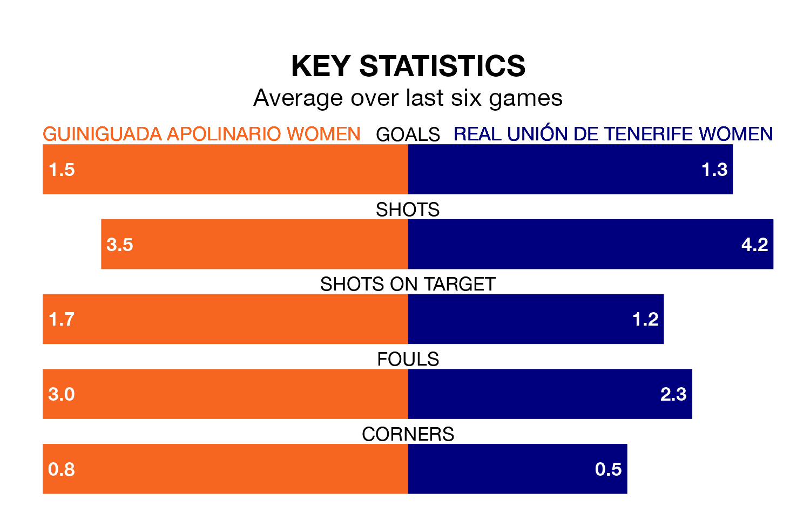

Real Unión de Tenerife Women travel to Guiniguada Apolinario Women on Sunday lunchtime in the Segunda Federación Femenina.
The visitors come into the game on the back of a win in their last match, having beaten La Solana Women 2-1 at home, with goals from.
Guiniguada Apolinario, meanwhile, lost their last match, 3-0 against Levante II Women.
Guiniguada Apolinario are bottom of the table after 25 games, of which they have won 10 and drawn four, earning 34 points.
Unión de Tenerife Women are 10 places ahead of the hosts in sixth, with 14 wins and six draws putting them on 48 points.
With 39 goals in 25 games so far this season, the away side are scoring more than average in the league with 1.6 goals per game. And they are conceding fewer than average, letting in 24 goals at a rate of 1.0 per game.
Guiniguada Apolinario, meanwhile, are below average scorers, with 1.0 goal per game, compared to a league average of 1.3. They have conceded 1.5 goals per game.
Guiniguada Apolinario are in reasonable form in the Segunda Federación Femenina, with four wins and two losses from their last six games.
With three wins and two draws over that period, Unión de Tenerife Women's form is slightly worse – they have taken 11 points from 18, compared to the home team's 12.
Updated: 12:39 (UTC), 26/03/24